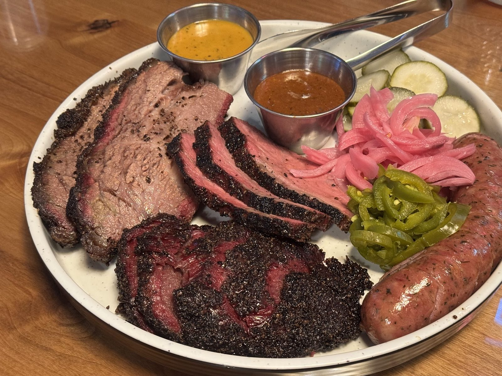

Beef cheeks & brisket
Tender beef cheeks. Brisket that needs no sauce. Brisket sandwiches too.
Barbecue · Austin, TX
Index of the menu
Beef cheeks, brisket and a pit master platter for three or four.

What to order first
The plates to start with.
Tender beef cheeks. Brisket that needs no sauce. Brisket sandwiches too.

Jalapeño cheese chorizo and pulled whole hog. The pit master platter feeds three or four.

Kimchi elote, kale Caesar slaw, miso carrots, cauliflower burns, chicken fried beets and Texas red chili frito pie.
4.4 / 5 · 2586 Google reviews
1Sooooooo AMAZING!!!! The beef cheeks literally melt in your mouth!!! And so does the brisket!!! If you are putting bbq sauce or sauce of any kind on these meats, you should be shot! The meat is literally so good it needs nothing! It's like when you have a really good steak, you don't put anything on it! Same deal! The staff, is, is there a word the better the exceptional?
2When the elderly gent said the wait was two and a half hours, expect to wait two and a half hours. Pit masters platter is good for 3-4 ppl. Beef cheeks were out of this world. Jalapeño cheese chorizo is easily a TEN Pork hop sausage EIGHT Pulled whole hog NINE Texas red chili frito pie EIGHT Kimchi elote EIGHT Kale Cesar slaw TEN
3This place is very “Austin”. It’s not your traditional Texas BBQ. Just like the other reviews say, the line is long because they have one person cutting meat and are very particular about plate presentation. The food was wonderful though! The brisket was top-notch! The beef cheeks were good but we preferred the brisket. The El Mesón taco was surprisingly amazing!
About
Alternative cuts from local farms and ranches. The menu changes daily.
One person carves, and every plate gets care. Friendly crew.

Visit
5621 Emerald Forest Dr, Austin, TX 78745
Expect a long line on busy days. Closed Tuesdays.